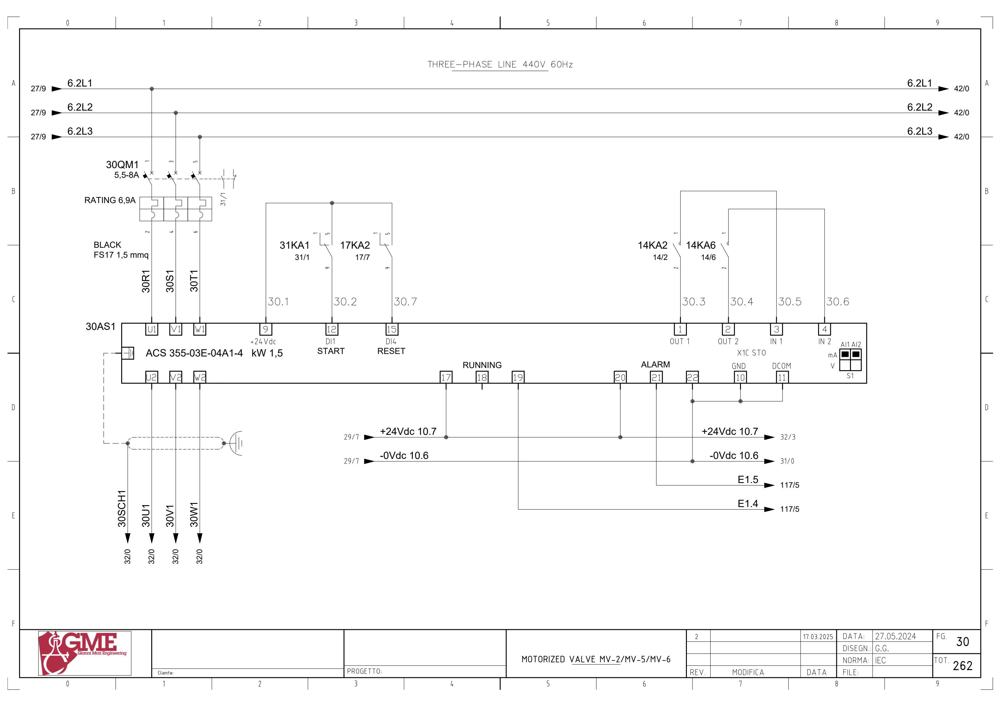
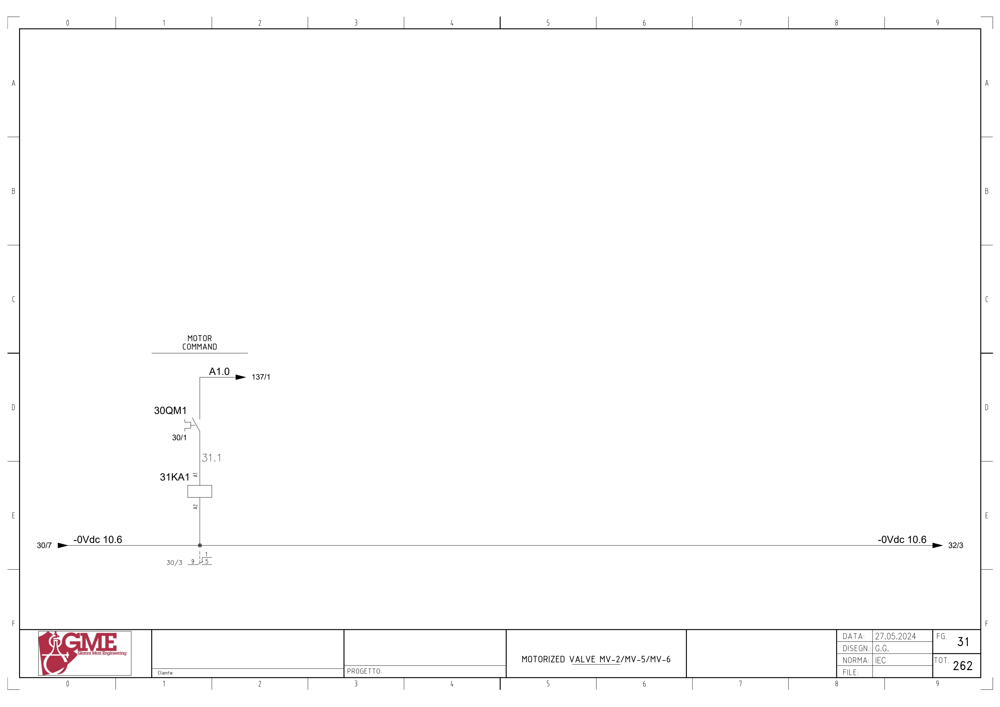
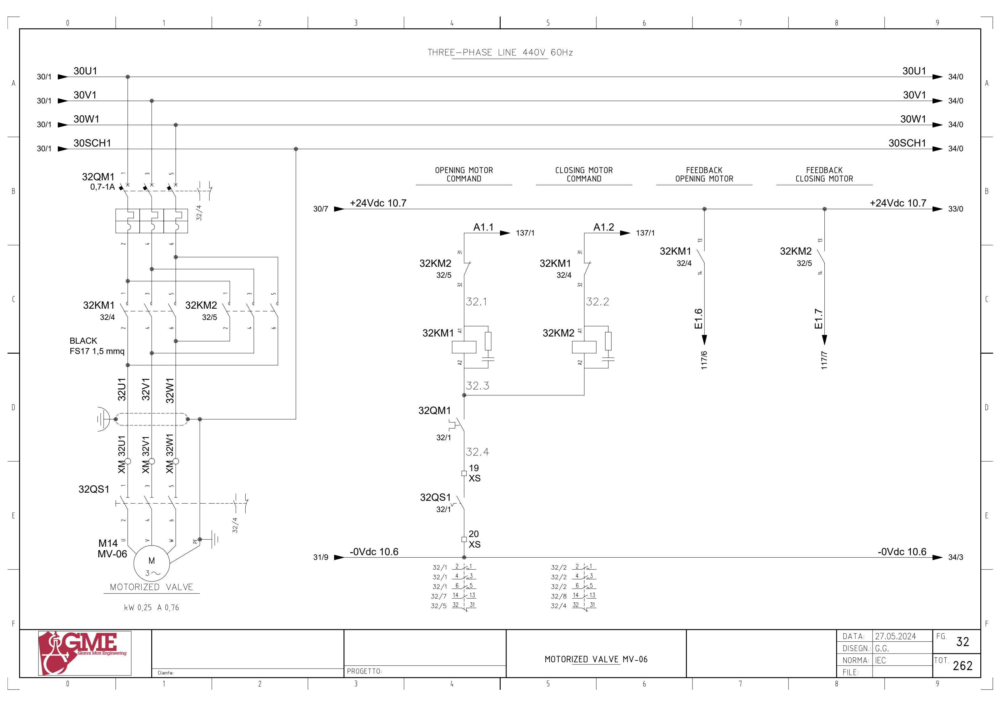
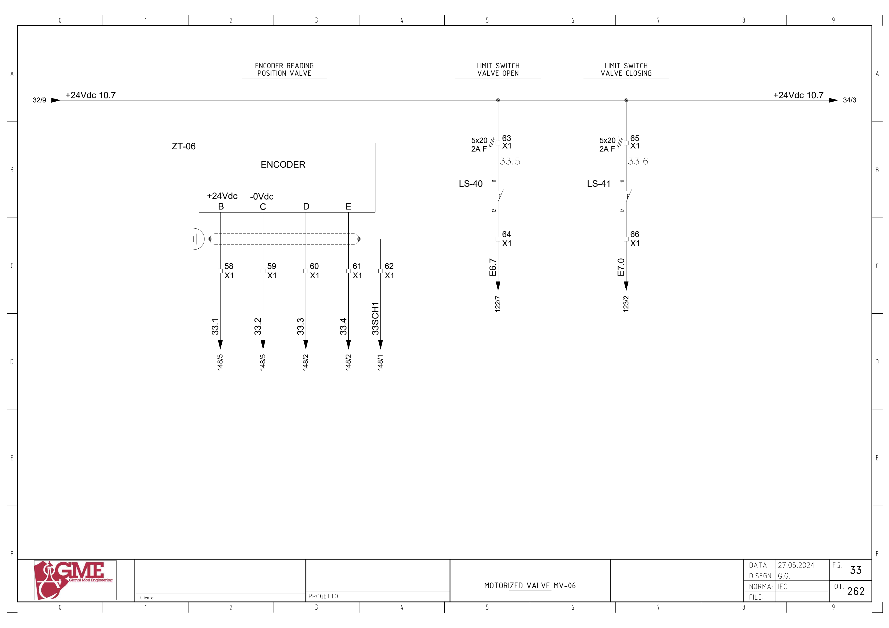
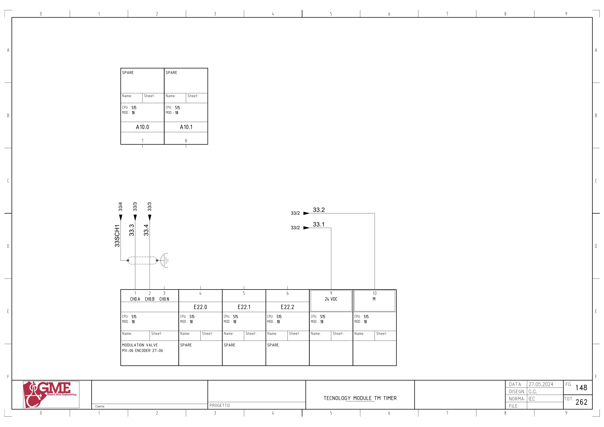

MV06 · 공통 인버터 구동 댐퍼 전기 회로 추적
1. 도면의 구성과 진단 경계
FG30/31: 공통30AS1 ACS355-03E-04A1-4(도면1.5kW). FG32: M14 MV06(도면0.25kW·0.76A),32KM1/2·32QM1·32QS1. FG33/148: LS40/41와 ZT06 엔코더·TM 채널.
공통 인버터 신호, MV06 개별 방향 접촉기, 끝단 리미트, 엔코더 위치를 네 층으로 나눕니다. 시공도면 LS34/35와 OEM LS40/41, 중복 FLO4TB2A 간선 C01은 미확정 상태를 유지합니다.
추가 시공도면 · 접속함·케이블·배관 경로 — 승인·현재 설치는 확인 전입니다.
2. MV02·MV05·MV06 공통 인버터 기동
A1.0 ↔ 백업 %Q1.0 / start aux inv · FG31 · PDF 32
- A1.0 → 30QM1 보조접점 → 31KA1 코일A1→A2 / -0Vdc10.6
- FG30: 30AS1 단자9(+24V) → 31KA1 접점1→9 → 단자12(DI1 START)
- 30AS1 출력 U2/V2/W2 → 30U1/30V1/30W1 → 각 댐퍼 분기
전달·사용 위치: 공통 인버터 기동으로 MV06 단독 열기/닫기 명령을 대신하지 않습니다. MV02·MV05도 같은 전원 계통입니다.
원본 심볼 직접 참조: 1082 / simulation / ORef 81 · 1186 / hmi / ORef 44 · 1821 / allarms 1 / ORef 1838 · 1821 / allarms 1 / ORef 44
3. 공통 인버터 응답 · 백업 power_ok
E1.4 ↔ 백업 %I1.4 / mv02_05_06_power_ok · FG30 · PDF 31
- +24Vdc10.7 → 30AS1 단자17
- 도면 RUNNING 단자19 → E1.4 → FG117/5
전달·사용 위치: 도면은 RUNNING, 백업은 mv02_05_06_power_ok입니다. 공통 계통의 신호 의미와 내부 전달을 확인합니다.
원본 심볼 직접 참조: 복원 LAD에서 이 이름의 직접 참조는 찾지 못했습니다. 내부 Inputs 등의 별도 전달·미해석 참조·현재 프로그램은 확인 전입니다.
4. 공통 인버터 이상
E1.5 ↔ 백업 %I1.5 / mv02_05_06_inv_all · FG30 · PDF 31
- +24Vdc10.7 → 30AS1 단자20
- 도면 ALARM 단자21 → E1.5 → FG117/5
전달·사용 위치: MV02·MV05·MV06 공통 이상 신호입니다. 현재 알람 극성·내부 반전·장치별 래치 영향은 추가 확인합니다.
원본 심볼 직접 참조: 복원 LAD에서 이 이름의 직접 참조는 찾지 못했습니다. 내부 Inputs 등의 별도 전달·미해석 참조·현재 프로그램은 확인 전입니다.
5. 열기 방향 명령
A1.1 ↔ 백업 %Q1.1 / open mv06 · FG32 · PDF 33
- A1.1 → 반대 방향 32KM2 NC 접점31→32
- 32KM1 코일A1→A2
- 공통 반환선 → 32QM1 보조접점
- XS:19 → 32QS1 보조접점 → XS:20 → -0Vdc10.6
전달·사용 위치: 원본1711의 모드·반대 출력·리미트·고장·교정 조건과 연결합니다. PLC 조건과 하드웨어 반대 접촉기 인터록을 따로 추적합니다.
원본 심볼 직접 참조: 1083 / simulation / ORef 636 · 1226 / allarms 2 / ORef 405 · 1711 / valve control loop / ORef 857 · 1711 / valve control loop / ORef 864 · 1713 / valve control loop / ORef 1517
6. 닫기 방향 명령
A1.2 ↔ 백업 %Q1.2 / close mv06 · FG32 · PDF 33
- A1.2 → 반대 방향 32KM1 NC 접점31→32
- 32KM2 코일A1→A2
- 공통 반환선 → 32QM1 보조접점
- XS:19 → 32QS1 보조접점 → XS:20 → -0Vdc10.6
전달·사용 위치: 원본1711의 모드·반대 출력·리미트·고장·교정 조건과 연결합니다. PLC 조건과 하드웨어 반대 접촉기 인터록을 따로 추적합니다.
원본 심볼 직접 참조: 1083 / simulation / ORef 644 · 1226 / allarms 2 / ORef 406 · 1711 / valve control loop / ORef 855 · 1711 / valve control loop / ORef 866 · 1713 / valve control loop / ORef 1523
7. 열기 접촉기 응답
E1.6 ↔ 백업 %I1.6 / mv06_fbk_opening · FG32 · PDF 33
- +24Vdc10.7 → 32KM1 보조접점13→14
- E1.6 → 해당 PLC 입력 모듈 참조
전달·사용 위치: 방향 접촉기 보조접점 응답입니다. 실제 개도와 끝단 도달은 별도 리미트·엔코더로 확인합니다.
원본 심볼 직접 참조: 복원 LAD에서 이 이름의 직접 참조는 찾지 못했습니다. 내부 Inputs 등의 별도 전달·미해석 참조·현재 프로그램은 확인 전입니다.
8. 닫기 접촉기 응답
E1.7 ↔ 백업 %I1.7 / mv06_fbk_closing · FG32 · PDF 33
- +24Vdc10.7 → 32KM2 보조접점13→14
- E1.7 → 해당 PLC 입력 모듈 참조
전달·사용 위치: 방향 접촉기 보조접점 응답입니다. 실제 개도와 끝단 도달은 별도 리미트·엔코더로 확인합니다.
원본 심볼 직접 참조: 복원 LAD에서 이 이름의 직접 참조는 찾지 못했습니다. 내부 Inputs 등의 별도 전달·미해석 참조·현재 프로그램은 확인 전입니다.
9. 열림 끝단 위치
E6.7 ↔ 백업 %I6.7 / mv06_open · FG33 · PDF 34
- +24Vdc10.7 → X1:63 / 2A F(5×20)
- LS-40 접점11→12
- X1:64 → E6.7
전달·사용 위치: 원본 제어·고장 네트워크의 내부 리미트와 물리 입력의 전체 전달·반전은 추가 확인합니다.
원본 심볼 직접 참조: 복원 LAD에서 이 이름의 직접 참조는 찾지 못했습니다. 내부 Inputs 등의 별도 전달·미해석 참조·현재 프로그램은 확인 전입니다.
10. 닫힘 끝단 위치
E7.0 ↔ 백업 %I7.0 / mv06_close · FG33 · PDF 34
- +24Vdc10.7 → X1:65 / 2A F(5×20)
- LS-41 접점11→12
- X1:66 → E7.0
전달·사용 위치: 원본 제어·고장 네트워크의 내부 리미트와 물리 입력의 전체 전달·반전은 추가 확인합니다.
원본 심볼 직접 참조: 1766 / analog input conversion / ORef 1481
11. 엔코더 위치 채널 · 주소 미확정
33.3 ↔ 백업 주소·채널 오프셋 미확정 · TM 구성/선언 확인 필요 · FG33 · PDF 34
- ZT-06 B(+24V) → X1:58 → 33.1 → FG148 단자9(24VDC)
- ZT-06 C(0V) → X1:59 → 33.2 → FG148 단자10(M)
- ZT-06 D → X1:60 → 33.3 → FG148 단자1 CH0.A
- ZT-06 E → X1:61 → 33.4 → FG148 단자2 CH0.B
- 실드 → X1:62 → 33SCH1 / FG148 실드·접지 표시
- FG148: MOD.18. CH0.N 단자3 연결은 이 도면에 표시되지 않음
전달·사용 위치: 엔코더 읽기·교정·환산 원본을 연결합니다. 주변 E20/21/22의 SPARE 비트는 카운트값 주소가 아닙니다. 실제 TM 구성·채널 주소·DB 대응은 미확정입니다.
위 직접 참조는 복원 원본의 같은 심볼명 위치입니다. 읽기·쓰기 역할, 현재 호출, 현장 사용을 함께 확정한 표는 아닙니다. 원본의 simulation 블록 참조가 있더라도 이번 작업에서 가상 실행·개발·시험은 진행하지 않았습니다.
원본 PLC와 연결
남은 확인과 기록
- MV02·MV05·MV06 공통 인버터 출력·기동/Reset/STO와 개별 분기 확인
- LS34/35와 LS40/41 설치 변경·단자·현재 입력 대응 확인
- 시공도면 FLO4TB2A 중복 식별자 C01와 실제 간선 대조
- 원본1711 NOT ON과 실제 호출·다른 방향 출력 쓰기 확인
- TM18 실제 모듈·주소·채널 및 위치 교정 기준 확인
도면을 함께 확인
FG 30 · 해당 도면 보기

FG 31 · 해당 도면 보기

FG 32 · 해당 도면 보기

FG 33 · 해당 도면 보기

FG 148 · 해당 도면 보기

| 기록 항목 | 내용 |
|---|---|
| 현장 식별 | 설비 ID / 반·단자대 / 모터·인버터 명판 / 도면 개정 |
| 신호 구간 | PLC 명령 / 단자 / 직렬 접점 / 릴레이 / DI / 응답 접점 / 입력 / 내부 DB |
| 관찰 결과 | 시각 / 운전 모드 / 기준값의 근거 / 관찰값 / 최초 불일치 구간 |
| 복구 확인 | 원인·조치 / 원인 해제 / Reset / 재요청 / 주변 설비 영향 |